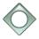
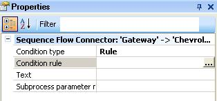
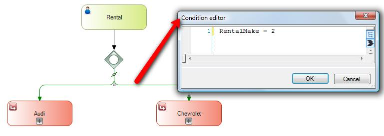
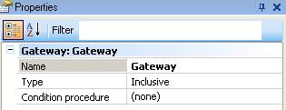
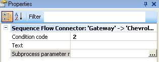
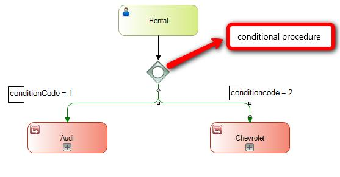
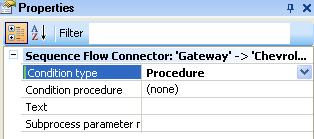
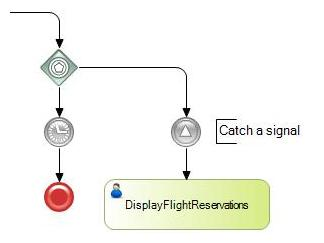

To define conditions you have the following process symbols:
 Inclusive Gateway: This type of Gateway supports situations in which more than one decision may be possible. When a signal reaches this Gateway, a complete evaluation is performed of all the conditions considered in the control. Each condition evaluated as true will result in a signal towards that outflow. There will always have to be at least one true condition.
Event Gateway: It makes it possible to establish a forking of different paths where the decision is based on two or more events that may happen, instead of conditions.
Exclusive Gateway: This type of Gateway divides the flow in two or more paths but the process flow will follow only one of these paths. The choice of the path to follow will be based on the evaluation of the conditions imposed on each path. If no condition is true, the process will be stuck in the Gateway, and for this reason the use of 'default' paths is suggested.
In this case, the condition can be defined in three different ways based on the complexity of the evaluation to perform.
These options are described below:
When you are positioned on an edge you can see that it has the following properties:

In this case the condition type is Rule and it is an arithmetic expression, which can be defined using attributes of the Transactions included in the diagrams and relevant data together with the following operations: <,>,=,+,*, <>, -.
Example:
There is a car rental process that is started with a Rental task in which the rental details are entered in a Transaction. Some of these details are: person, number of days, make of the car to be rented, etc. Next, the selected make is evaluated using the rule RentalMake = 2; what’s being evaluated here is a secondary attribute of the Rental Transaction. And if the person effectively chose Chevrolet, the flow will continue through the Chevrolet subprocess.

When you are positioned on a Gateway you see the following properties:

This is the place to define the procedure that will be executed when deciding which path to take. Once a procedure has been defined, the edges will have different properties from those you saw in the previous case, as in this case what has to be defined in each one is their value (condition code), and if it matches the value returned by the procedure it will continue through this path.

The procedure to evaluate the condition must have the following parameter rule and it can have a maximum of 100 characters:
Parm(in:&WorkflowProcessDefinition,in:&WorkflowProcessInstance, in: &WorkflowWorkitem, out: &conditionCode);
Where:
Note: The user is responsible for defining that the procedure returns a valid value, that is to say, that it matches any one of the edges.
Example:
Given the car rental process defined above you will create a procedure to evaluate the condition that has the following code:
For each
Where RentalId = &WorkflowProcessInstance.GetApplicationDataByName('RentalId').NumericValue
if RentalMake = 1
&conditionCode = 1
Else
If RentalMake = 2
&conditionCode = 2
Endif
Endif
Endfor
In addition, the parameter rule will have to be defined as explained above.
Once the procedure has been defined, it has to be associated with the Gateway through its properties, and the conditional codes corresponding to each one of them have to be defined in the edges.

Define a procedure for each edge
When you are positioned on an edge just like in the case of defining a rule as condition, you can see that it has the following properties:

In this case the type of condition is Procedure. Next, you need to define the procedure and each edge will be evaluated according to the associated procedure. The associated procedure must have the format defined in the previous case.
The result of the procedure must be 1 if the condition is met and the flow must go on; otherwise, it must be 0.
In this case the condition must be evaluated in terms of intermediate events, such as:

For the timer, the process will continue when the time specified in the event has elapsed.
On the other hand, for the signal it will continue when a signal event of throw type has been defined in an execution thread that is parallel to this one.
| Backlinks | |
| Category:BPD Gateways | Toc:GeneXus BPM Suite |
| Inclusive Gateway |